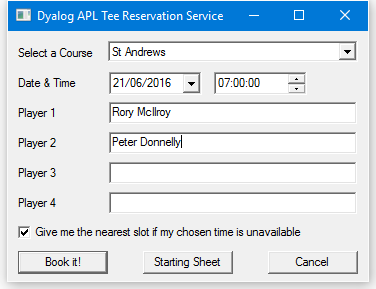
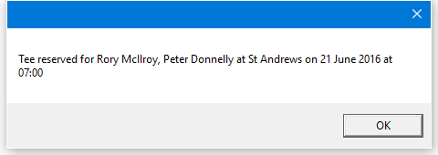
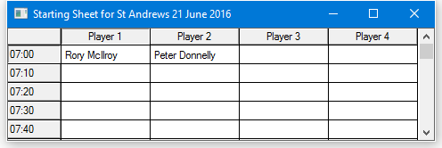
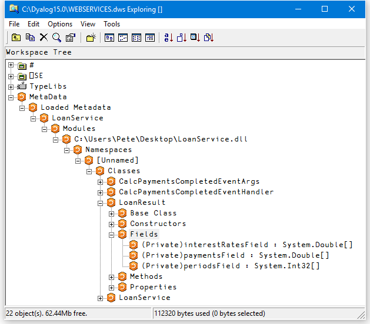
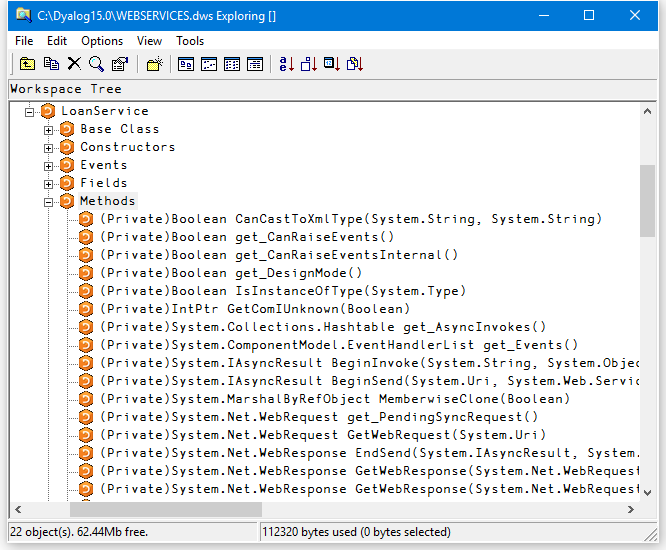

Calling Web Services
To call a web service, you need a proxy class on the client that exposes the same methods and properties as the web service. The proxy creates the illusion that the web service is present on the client. Client applications create instances of the proxy class, which then communicate with the web service through IIS, using TCP/IP and HTTP/XML protocols.
Microsoft provides a utility called WSDL.EXE that queries the metadata (Web Service Definition Language) of a web service and generates C# source code for a matching proxy class.
The MakeProxy Function
The MakeProxy function is provided in the supplied workspace [DYALOG]\Samples\asp.net\webservices\webservices.dws.
MakeProxy is monadic, and its argument specifies the URL of the web service to which you want to connect. For example, the following expressions uses MakeProxy to connect to the LoanService sample web service provided with Dyalog .NET:
MakeProxy'http://localhost/dyalog.net/Loan/Loan.asmx'MakeProxy runs the Microsoft utility WSDL.EXE, passing the URL to it as an argument. The utility then creates a C# source code file in your current directory that contains the code necessary to create a proxy class. The name of the C# file is the name of the web service (as declared in its header line) followed by the extension .cs.
MakeProxy then calls the C# compiler to compile this file, creating an assembly with the same name, but with a .dll extension, in your current directory. This assembly contains a .NET class of the same name.
MakeProxy attempts to determine the correct path for WSDL.EXE and CSC.EXE; different versions of Microsoft.NET or Visual Studio might necessitate having to modify the MakeProxy function to locate these tools.
Using LoanService from Dyalog
The MakeProxy'http://localhost/dyalog.net/Loan/Loan.asmx' call creates a C# source code file called LoanService.cs and an assembly called LoanService.dll in your current directory. The name of the proxy class in LoanService.dll is LoanService.
You use this proxy class in the same way that you use any .NET class. For example:
⎕USING ←,⊂',.\LoanService.dll
LN←⎕NEW LoanService
LN.CalcPayments 100000 20 10 15 2
LoanResultAs expected, the result of CalcPayments is an object of type LoanResult. We will assign this to LR and then reference its fields:
LR←LN.CalcPayments 100000 20 10 15 2
LR.Periods
10 11 12 13 14 15 16 17 18 19 20
LR.InterestRates
2 2.5 3 3.5 4 4.5 5 5.5 6 6.5 7 7.5 8 8.5 9 9.5 10 10.5 ...
LR.(((⍴InterestRates),⍴Periods)⍴Payments)
920.1345384 844.5907851 781.6836919 728.4970675 682.947 ...The Payments field is a vector because it was defined that way. However, as shown above, it is easy to give it the "right" shape.
When you execute the CalcPayments method in the proxy class, the class transforms and packages up your arguments into an appropriate SOAP/XML stream, then sends them (using TCP/IP) to the URL that represents the web service wherever that URL is on the internet/intranet. It then decodes the SOAP/XML that comes back, and returns the response as the result of the method.
Information
Depending on the speed of your connection, and the logical distance away of the web service itself, calling a web service method can take a significant amount of time irrespective of how much time it takes to execute on its server.
Using GolfService from Dyalog
The workspace [DYALOG]\Samples\asp.net\webservices\webservices.dws contains functions that present a GUI interface to the GolfService web service.
The GOLF function accesses GolfService through a proxy class. GOLF is called with an argument of 0 or 1. Use 1 to force GOLF to create or rebuild the proxy class, which it does by calling MakeProxy. You must use an argument of 1 the first time you call GOLF, or if you ever change the GolfService APL code.
Information
You cannot make the proxy for GolfService unless the web server class has been compiled on the server. At present, the only way to trigger the compilation of golf.asmx into a web service is to visit the page once using your preferred browser, as described in Writing Web Services and its sub-sections.
The first few lines of the function are listed below. If the argument is 1, line [2] makes the proxy class GolfService.DLL in the current directory; if not, it is assumed to be there already. Line [6] defines ⎕USING to use it, and line [7] creates a new instance assigned to GS. Line [8] calls the GetCourses method, which returns a vector of GolfCourse objects. The namespace reference array expansion is used to extract the course codes and names from the Code and Name fields respectively:
∇ GOLF FORCE;F;DLL;COURSES;COURSECODES;N;GS;⎕USING
[1] :If FORCE≢0
[2] DLL←MakeProxy 'http://localhost/dyalog.net/golf/golf.asmx'
[3] :Else
[4] DLL←'.\GolfService.dll'
[5] :EndIf
[6] ⎕USING←'System'(',',DLL)
[7] GS←⎕NEW GolfService
[8] COURSECODES COURSES←↓⍉↑GS.GetCourses.(Code Name)The following image illustrates the user interface provided by GOLF. In this example, the user has typed the names of two golfers (one rather more famous than the other).

When the Book it! button is pressed, the BOOK callback function is triggered:
∇ BOOK;CCODE;YMD;HOUR;MINUTES;FLAG;NAMES;BOOKING;M
[1] CCODE←⊃F.COURSE.SelItems/COURSECODES
[2] YMD←3↑F.DATE.(IDNToDate⊃DateTime)
[3] HOUR MINUTES←2↑1↓F.TIME.DateTime
[4] FLAG←1=F.Nearest.State
[5] NAMES←F.(Name1 Name2 Name3 Name4).Text
[6] BOOKING←GS.MakeBooking CCODE (⎕NEW DateTime (YMD,HOUR MINUTES 0)),FLAG,NAMES
[7] 'M'⎕WC'MsgBox'
[8] :If BOOKING.OK
[9] M.Text←'Tee reserved for ',¯2↓⊃,/BOOKING.TeeTime.Players,¨⊂', '
[10] M.Text,←' at ',BOOKING.Course.Name
[11] M.Text,←' on ',BOOKING.TeeTime.Time. (ToLongDateString,' at ',ToShortTimeString)
[12] :Else
[13] M.Text←BOOKING.(Course.Name,'', TeeTime.Time.(ToLongDateString, ' at ',ToShortTimeString),' ',Message)
[14] :EndIf
[15] ⎕DQ'M'
∇Line [6] calls the MakeBooking method of the GS object, passing it the data entered by the user. The result, a Booking object, is assigned to BOOKING. Line [8] checks its OK field to determine whether the reservation was successful. If it was, lines [9-11] display the message box shown below – notice how the various fields are extracted and how the ToLongDateString and ToShortTimeString methods are employed.

When the Starting Sheet button is pressed, the SS callback function is triggered:
∇ SS;CCODE;YMD;M;SHEET;OK;COURSE;TEETIME;S;DATA;N
;TIMES
[1] CCODE←⊃F.COURSE.SelItems/COURSECODES
[2] YMD←3↑F.DATE.(IDNToDate⊃DateTime)
[3] SHEET←GS.GetStartingSheet CCODE(⎕NEW DateTime YMD)
[4] :If SHEET.OK
[5] DATA←↑(SHEET.Slots).Players
[6] TIMES←(SHEET.Slots).Time
[7] 'S'⎕WC'Form'('Starting Sheet for ', SHEET.Course.Name,' ', SHEET.Date.ToLongDateString) ('Coord' 'Pixel')('Size' 400 480)
[8] 'S.G'⎕WC'Grid'DATA(0 0)(S.Size)
[9] S.G.RowTitles←TIMES.ToShortTimeString
[10] S.G.ColTitles←'Player 1' 'Player 2' 'Player 3' 'Player 4'
[11] S.G.TitleWidth←60
[12] ⎕DQ'S'
[13] :Else
[14] 'M'⎕WC'MsgBox'('Starting Sheet for ', SHEET.Course.Name,' ', SHEET.Date.ToLongDateString)('Style' 'Error')
[15] M.Text←SHEET.Message
[16] ⎕DQ'M'
[17] :EndIf
∇Line [3] calls the GetStartingSheet method of the GS object. The result, a StartingSheet object, is assigned to SHEET. Line [4] checks its OK field to determine whether the call was successful. If it was, lines [5-12] display the result in a Grid:

Exploring Web Services
You can use the Workspace Explorer to browse the proxy class associated with a web service in the same way that you can browse any other .NET assembly. The following screenshots show the Metadata for LoanService, loaded from the LoanService.dll proxy.
LoanService was written in an APL source file but it appears and behaves the same as any other .NET class.
The structure of the LoanResult class is:

In addition to CalcPayments, which was written in an APL source file, there are a large number of other methods that have been inherited from the base class. The methods exposed by LoanService are:

Asynchronous Use
Web services provide both synchronous (client calls the function and waits for a result) and asynchronous operation.
Each method is exposed as a function with the same name (the synchronous version) together with a pair of functions with that name prefixed with Begin and End respectively.
The Beginxxx functions take two additional parameters; a delegate class that represents a callback function, and a state parameter.
To initiate the call, execute the Beginxxx method using the standard parameters followed by two objects. The first is an object of type System.AsyncCallback, representing an asynchronous callback, that is, a callback to be invoked when the asynchronous call is complete. The second is an object that is used to supply extra information. See Using a Callback for information on how callbacks are used. If you are not using a callback, these items should be null object references. You can specify a reference to a null object using the expression (⎕NS''). For example, using the LoanService sample:
A←LN.BeginCalcPayments 10000 16 10 12 9(⎕NS'')(⎕NS'')The result is an object of type WebClientAsyncResult:
A
System.IAsyncResult ⎕CLASS System.Web.Services.Protocols.WebClientAsyncResultSome time later, you call the Endxxx method with this object as a parameter. For example:
LN.EndCalcPayments A
LoanResultYou can execute several asynchronous calls in parallel:
A1←LN.BeginCalcPayments 20000 20 10 15 7(⎕NS'')(⎕NS'')
A2←LN.BeginCalcPayments 30000 10 8 12 3(⎕NS'')(⎕NS'') LN.EndCalcPayments A1
LoanResult LN.EndCalcPayments A2
LoanResultUsing a Callback
The simple approach described in Asynchronous Use is not always practical. If it can take a significant amount of time for the web service to respond, you might prefer to have the system notify you (using a callback function) when the result from the method is available.
The example function TestAsyncLoan in the supplied workspace [DYALOG]\Samples\asp.net\webservices\webservices.dws shows how you can do this. It is somewhat artificial, but explains the mechanism that is involved.
TestAsyncLoan is a convenience function that calls AsyncLoan with suitable arguments. TestAsyncLoan takes an argument of 1 or 0 that determines whether a proxy class for LoanService is to be built.
∇ TestAsyncLoan MAKEPROXY
[1] (⍕MAKEPROXY),' AsyncLoan 10000 10 8 5 3'
[2] MAKEPROXY AsyncLoan 10000 10 8 5 3
∇The AsyncLoan function and its callback function GetLoanResult are more interesting:
∇ {MAKEPROXY}AsyncLoan ARGS;DLL;SINK;LN;AS;AR
[1] :If 2≠⎕NC'MAKEPROXY' ⋄ MAKEPROXY←0 ⋄ :EndIf
[2] :If MAKEPROXY
[3] DLL←MakeProxy'http://localhost/dyalog.net/loan/ loan.asmx'
[4] :Else
[5] DLL←'.\LoanService.dll'
[6] :EndIf
[7] ⎕USING←'System'(',',DLL)
[8] LN←⎕NEW LoanService
[9] AS←⎕NEW System.AsyncCallback,⊂⎕OR'GetLoanResult'
[10] AR←LN.BeginCalcPayments ARGS,AS,LN
[11] 'AsyncLoan waits for async call to complete'
[12] :While 0=AR.IsCompleted
[13] ⍞←'.'
[14] :EndWhile
∇ ∇ GetLoanResult arg;OBJ;LR;RSLT
[1] 'GetLoanResult callback fires ...'
[2] OBJ←arg.AsyncState
[3] LR←OBJ.EndCalcPayments arg
[4] RSLT←LR.(((⍴Periods),(⍴InterestRates))⍴Payments)
[5] RSLT←((⊂''),LR.Periods),(LR.InterestRates),[1]RSLT
[6] 'Result is'
[7] ⎕←RSLT
∇The effect of running TestAsyncLoan is:
TestAsyncLoan 0
0 AsyncLoan 10000 10 8 4 3
...AsyncLoan waits for async call to complete...
...GetLoanResult callback fires ...
...Result is
3 3.5 4
8 117.2957193 105.7694035 96.5607447
9 119.5805173 108.0741442 98.88586746
121.892753 110.409689 101.2451382AsyncLoan[8] creates a new instance of the LoanService class called LN. The next line creates an object of type System.AsyncCallback called AS. This object, which is termed a delegate, identifies the callback function that is to be invoked when the asynchronous call to CalcPayments is complete. In this case, the name of the callback function is GetLoanResult.
Information
⎕OR is necessary because the AsyncCallback constructor must be called with a parameter of type System.Object.
AsyncLoan[10] calls BeginCalcPayments with the parameters for CalcPayments, followed by references to AS (which identifies the callback) and LN (which identifies the object in question). The latter will be in the argument supplied to the GetLoanResult callback. AsyncLoan[12-14] loop, displaying dots, until the asynchronous call is complete. GetLoanResult will be invoked during or immediately after this loop, and will be executed in a different APL thread.
When the GetLoanResult callback is invoked, its argument arg is an object of type System.Web.Services.Protocols.WebClientAsyncResult. It is a reference to the same object AR that was the result returned by BeginCalcPayments.
This object has an AsyncState property that references the LoanService object LN that was passed as the final parameter to BeginCalcPayments. GetLoanResult[2] retrieves this object and assigns it to OBJ. GetLoanResult[3] calls the EndCalcPayments method, passing it arg as the AsyncResult parameter as before. The resulting LoanResult object is then formatted and displayed.